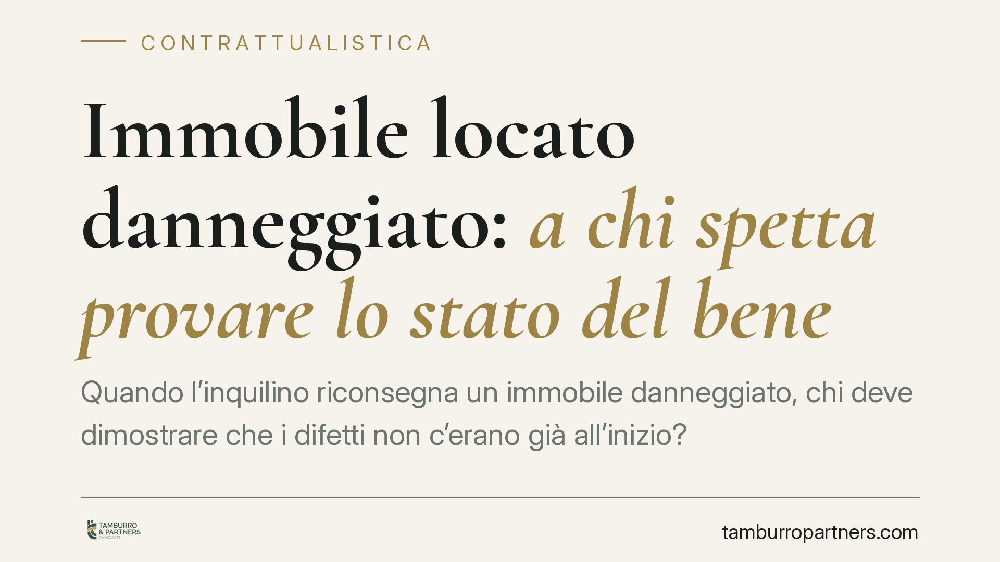

Immobile locato danneggiato: a chi spetta provare lo stato del bene
Quando l'inquilino riconsegna un immobile danneggiato, chi deve dimostrare che i difetti non c'erano già all'inizio? Un orientamento consolidato sull'articolo 1590 del Codice civile pone questo onere a carico del conduttore. Diverso è invece il discorso per il risarcimento dei canoni persi, che esige una prova rigorosa. Vediamo cosa cambia in concreto.

Il punto giuridico
Alla fine di una locazione capita spesso che locatore e conduttore discutano sullo stato dell'immobile riconsegnato. Il primo lamenta danni; il secondo sostiene che quei difetti erano già presenti. La questione non è di dettaglio: da essa dipende chi debba sopportare il costo del ripristino.
La chiave è l'articolo 1590 del Codice civile, che disciplina la riconsegna del bene e introduce una presunzione destinata a orientare l'intero contenzioso.
Inquadramento normativo
L'art. 1590 c.c. stabilisce, al primo comma: «Il conduttore deve restituire la cosa al locatore nello stato medesimo in cui l'ha ricevuta, in conformità della descrizione che ne sia stata fatta dalle parti, salvo il deterioramento o il consumo risultante dall'uso della cosa in conformità del contratto».
Il secondo comma prosegue: «In mancanza di descrizione, si presume che il conduttore abbia ricevuto la cosa in buono stato di manutenzione».
Il meccanismo è lineare. Se all'inizio del rapporto non è stato redatto alcun documento che fotografi le condizioni dell'immobile, la legge presume che il bene fosse in buono stato. Ne deriva un'inversione dell'onere della prova: non è il locatore a dover dimostrare che i danni sono sopravvenuti, ma il conduttore a dover provare che i difetti preesistevano alla consegna.
Questa impostazione, confermata da un orientamento della giurisprudenza di legittimità, discende dalla stessa ratio dell'art. 1590: in assenza di una descrizione condivisa, la presunzione serve a colmare il vuoto probatorio a favore di chi ha affidato il bene. Per coerenza con questa finalità, l'orientamento tende a riconoscere l'operatività della presunzione anche quando il contratto è stato concluso in forma verbale, proprio perché è l'assenza di descrizione, e non la forma del contratto, a far scattare il meccanismo.
La distinzione che conta: danno materiale e canoni persi
Qui occorre tenere separati due profili che nel contenzioso vengono spesso confusi.
Primo profilo: il danno materiale al bene. Opera la presunzione dell'art. 1590 c.c. Il locatore che riscontra i danni non deve provare lo stato iniziale dell'immobile: è il conduttore a dover dimostrare l'eventuale preesistenza dei difetti.
Secondo profilo: il risarcimento per i canoni non percepiti. Quando il locatore chiede un ristoro per il periodo in cui l'immobile è rimasto inutilizzabile a causa dei danni, il regime cambia. Qui non c'è alcuna presunzione: il locatore deve provare in modo rigoroso la perdita subita, cioè l'effettiva impossibilità di locare il bene, la durata del fermo e il mancato guadagno.
La differenza è sostanziale. Sul danno materiale il conduttore parte in posizione sfavorevole; sul mancato reddito è il locatore a dover costruire una prova puntuale, non potendo limitarsi a stime generiche.
Implicazioni pratiche
Per il locatore, la presunzione è un vantaggio solo apparente. Chi non documenta lo stato iniziale si espone comunque a contestazioni sull'entità e sulla natura dei danni, e nulla gli garantisce il risarcimento dei canoni persi senza una prova solida.
Per il conduttore, l'assenza di un verbale di consegna è un rischio concreto: senza elementi oggettivi sullo stato originario, superare la presunzione in giudizio diventa difficile.
In entrambi i casi, il documento di consegna non è una formalità burocratica, ma lo strumento che determina chi vince la causa.
Cosa fare in concreto
- Redigere un verbale di consegna dettagliato all'inizio e alla fine della locazione, sottoscritto da entrambe le parti, con indicazione analitica dello stato di ogni ambiente e degli impianti.
- Documentare con fotografie datate le condizioni dell'immobile, meglio se con riferimenti temporali verificabili, da conservare insieme al contratto.
- Formalizzare per iscritto le locazioni di fatto: anche quando il rapporto è nato in forma verbale, è opportuno ricondurlo quanto prima a un accordo scritto che includa la descrizione del bene.
- Per il locatore che lamenta canoni persi, è consigliabile precostituire prova dell'inutilizzabilità del bene e dei tentativi di nuova locazione (annunci, trattative, periodi di sfitto).
- Conservare ogni comunicazione tra le parti relativa allo stato dell'immobile e agli interventi di manutenzione eseguiti durante il rapporto.
Disclaimer
Contributo informativo a cura di Tamburro & Partners Avvocati. Non costituisce parere legale.
Ogni contratto ha il suo equilibrio.
Se vuoi una revisione delle clausole o una redazione su misura, scrivi allo studio. Ti rispondiamo entro un giorno lavorativo.